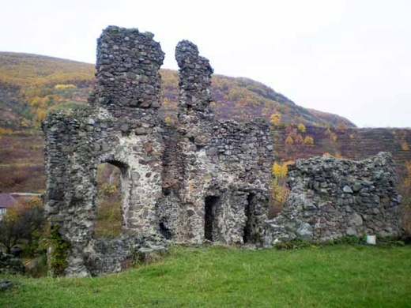
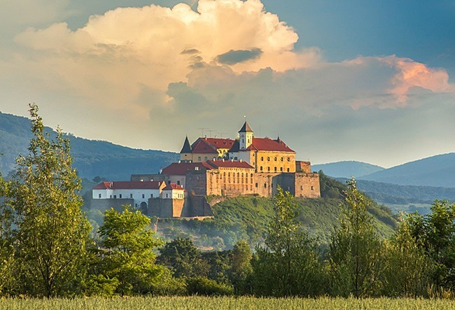

Виноградівський замок
Виноградівський замок знаходиться в місті Виноградів, заснований на правому березі річки Тиси (притока Дунаю). В якості місця для будівництва фортифікацій була обрана скеляста тераса Чорної гори («сплячий» вулкан, 656 метрів над рівнем моря), що знаходиться на східній околиці міста. Східна сторона Виноградівського замку виходить на схил гори, а з західного боку у підніжжя тераси сформувалося місто, яке прекрасно проглядається з боку замкового пагорба. Зараз Виноградівський замок знаходиться в руїнах, велика частина споруд замку зруйнована, хоча загальний оборонний периметр і контури внутрішніх замкових будівель ще досить чітко простежуються по фрагментах збережених кам’яних стін.
Виноградівський замок
У Мукачівському замку можна побачити відреставровану середньовічну фортифікаційну архітектуру, стародавні двори і галереї з виставками сучасної скульптури. Мукачівський замок найчастіше називають Замок Паланок. Цей неповторний замок є однією з найцінніших архітектурно-історичних пам’яток XIV-XVII століть. А своєю красивою назвою «Паланок» замок зобов’язаний укріпленому навколо нього в глибокому водяному рові частоколу-паланку. Перші згадки про цей замок відносяться до XI століття. У ті часи він представляв собою одну вежу, яка збереглася до наших днів.
Виноградівський замок
Андріївська церква — барокова церква Св. Андрія у Києві, збудована в 1744–1767 рр. за проектом архітектора Бартоломео Растреллі на Андріївській горі в пам’ять відвідин Києва імператрицею Єлизаветою Петрівною.Андріївська церква представлена однокупольним храмом із п’ятиглавим завершенням, що має форму хреста. У кутах хреста розміщені декоративні вежі на масивних стовпах, що відіграють роль своєрідних контрфорсів. Зовні контрфорси прикрашені пілястрами й прикриті трьома парами колон з капітелями коринфського ордеру. До храму з боку вулиці ведуть круті чавунні сходи.